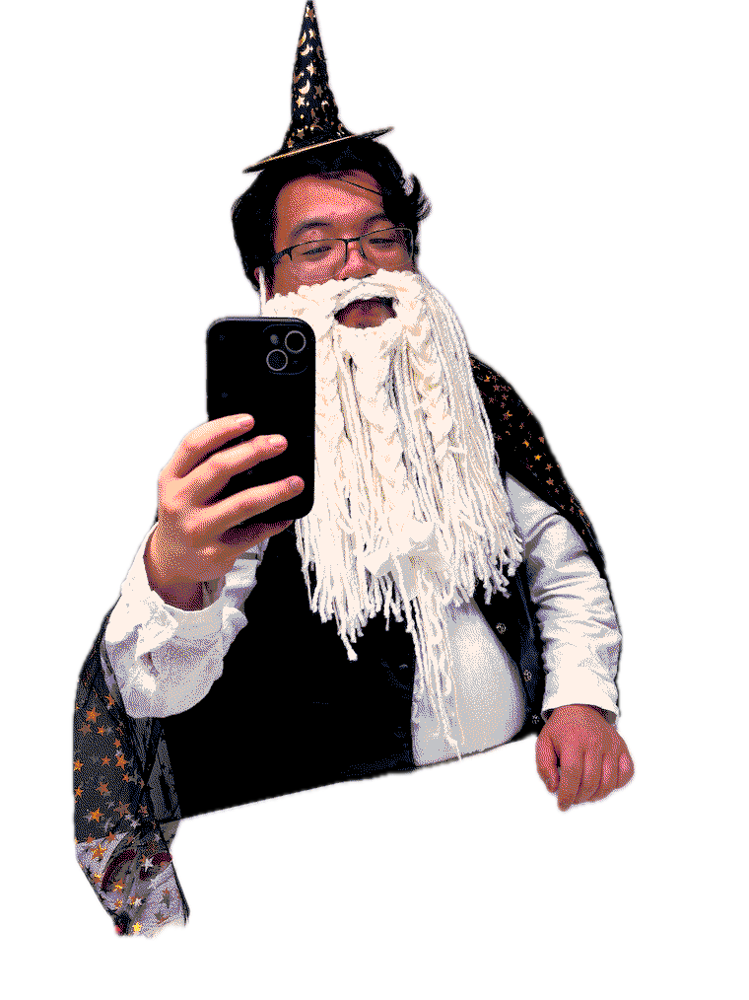

About Me
Names: Dan, Jeco, dangus
Pronouns: he/him/his
Age: 24 years old
Identities:


Final Fantasy Job:
DND Class:
Favorite Color: Aqua Blue
Handedness: Left-handed
Favorite Planets: Earth & Saturn
Favorite Seasons: Summer & Fall
Favorite Tamagotchis: Kuchipatchi & Ginjirotchi
Things I want to learn right now: knitting colorwork, playing the guitar & just playing music again, getting better at Tagalog
